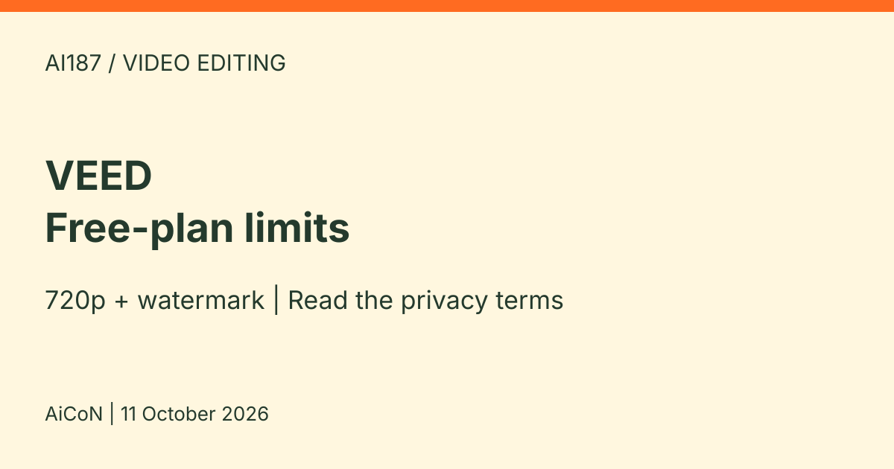

VEED: free video editor with watermark, and a privacy catch on the free plan
VEED is a browser video editor with AI tools. The free plan exports 720p with a watermark, AI tools are one-time trials, and free-plan uploads may be used to train AI.

What it is
VEED is an online video editor that runs in the browser, with no download. VEED's video editor page says you can trim, crop, resize and add text and music, and use AI tools such as automatic subtitles, audio cleanup (background noise removal) and Auto Edits.
Is it free
Yes, for specific features. VEED's video editor page says free users get basic editing tools and exports in 720p. The free plan also offers one-time trials of AI tools such as Auto Edits, AI B-roll and audio cleanup. Free exports carry a VEED watermark, and VEED's help center says the watermark is hardcoded into the video. VEED's help center says each uploaded file can be up to 1 GB on the Free plan. The editor page advertises paid plans from roughly ₹870 per month on annual billing ($9 per month, $108 for a year, about ₹10,450), or roughly ₹1,840 per month on monthly billing ($19). These are approximate conversions at about ₹96.8 per US dollar from Mataf on 11 October 2026, not verified India checkout prices. Taxes and bank fees may change the total. The pricing page did not display populated price cards during this check. Confirm the actual plan, features, billing period and total before paying.
Is it available in India
The public pages loaded during our check, but that alone does not confirm India account access or Indian payment support. We did not test signup, an export or checkout from India. Check the account and final billing screen before relying on it for a deadline.
How to try it
- Read the privacy warning below first. If it is acceptable, open the official editor page and follow the free-account route. Do not choose a paid trial unless you want its billing conditions.
- Upload a short, non-sensitive clip you own (up to 1 GB per file on the Free plan) and try basic editing. Check any AI feature's trial limit before using it.
- Finish editing, select export quality in Settings, then click Done to render. Download the MP4 from the video page. Expect 720p and a watermark on a free export. These steps follow official help, not our own export test.
Limits and a privacy catch to read first
- VEED's privacy policy says it may use personal data in content uploaded by users on a "Free" subscription to develop and improve its applications, including training AI models. It says this does not include content uploaded through its mobile apps.
- The same policy says free-tier users can object and opt out, but that if you opt out during your Free subscription, you cannot keep using the Free tier. The policy says you must either delete your account or upgrade to a paid subscription if you object during the Free subscription.
- AiCoN advice: on the free plan, do not upload videos with private people, children, ID documents, client work or anything confidential.
- AI tools on the free plan are one-time trials, so do not plan regular AI use on it.
- Erasure is not a promise to undo all past training. The policy allows retention for valid reasons and continued use of deidentified, anonymised or aggregated derived information. It provides a contact route for rights requests.
- The policy says the applications are not intended for children.
- We did not create an account, upload a clip, test AI tools or export a video.
Frequently asked questions
Is VEED free?
Yes, for basic editing and 720p exports with a watermark. AI tools are one-time trials. The editor page advertises paid plans from about ₹870 per month ($9) on annual billing. The annual total is $108, roughly ₹10,450 before any taxes or fees; it is not a $9 month-to-month subscription. Actual India pricing is unverified.
Does VEED train AI on my free-plan videos?
Its privacy policy says it may use personal data in content uploaded under a Free subscription for developing and improving its applications, including AI models. Opting out ends your use of the Free tier.
Will upgrading remove a watermark from my downloaded video?
Not from the already exported file. Official help says the watermark is hardcoded. After upgrading, export the original project again rather than reuploading the watermarked download.
What changed since this post?
Sources checked on 11 October 2026. Current official help confirms 720p Free exports and the per-file upload limit. The privacy policy remains the main caution. Starting paid prices are advertised on the editor page, while the separate pricing page did not show populated price cards in our check. This is a source check, not a product trial.
Sources: VEED video editor, Export help, Upload help, VEED privacy policy, Pricing page, Mataf USD/INR conversion. Checked 11 October 2026.